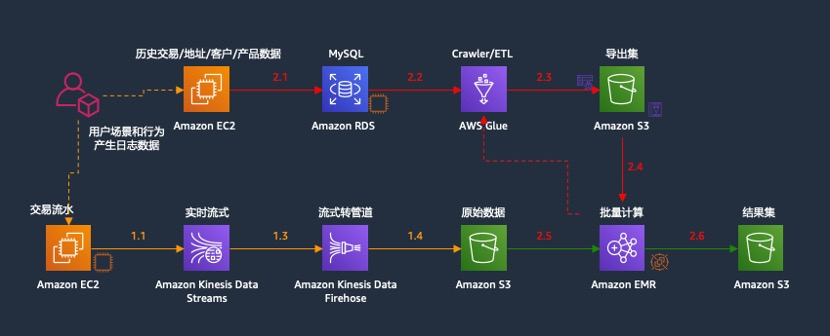
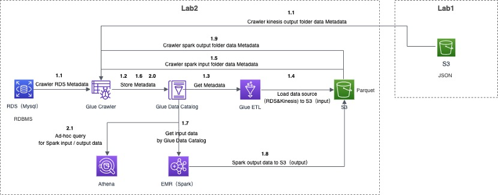

完成本节实验大概需要60分钟。
在本练习中，您将学习如何使用Amazon EMR（Spark）和AWS Glue（ETL）构建批量数据分析处理程序。为了使本实验的练习更加贴近实际的业务场景，我们模拟了完整的从数据产生（模拟历史数据和流数据）、数据存储、数据处理、到数据分析和数据可视化的完整过程（数据可视化在Lab3/Lab4中完成）。
具体可参考如下架构图： 
组件说明如下：
• RDS作为Lab2次实验的历史数据源，RMDBS格式，包含人员信息表tbl_customer、产品信息表tbl_product、地址信息表tbl_address、交易历史流水表tbl_transaction，等4张表，参与批处理计算；
• Lab1实验中Kinesis的输出（存放在Lab1指定的S3文件夹中，Json格式），为近实时当日交易流水，也可以作为Lab2批处理的输入，参与批处理计算（注意：学员可以考虑使用Lab1的输出数据或者使用我们提前准备好的数据）；
• S3桶作为数据湖的存储基础，包含input文件夹（用于EMR Spark批处理的输入），存放通过Glue ETL加载进来的RDS历史数据源和Kinesis当日近实时数据，以Parquet格式存放。output文件夹，存放EMR Spark批处理的结果数据（Parquet格式）；
详细的数据流步骤说明如下： 
具体说明如下：
1.1 通过Glue Crawler功能爬取RDS库中4张表的元数据和Kinesis输出的数据的元数据；
1.2 Glue Crawler将爬取RDS和Kinesis的元数据，存入到Glue的Data Catalog数据库；
1.3 Glue ETL通过Data Catalog识别RDS表元数据和Kinesis元数据，以便ETL作业引用；
1.4 Glue ETL加载4张表数据和Kinesis输出的数据，到指定的S3存储桶的input文件夹中，作为Spark批处理的数据源输入；
1.5 通过Glue Crawler功能爬取S3桶中input文件夹中数据的元数据；
1.6 Glue Crawler将爬取input文件夹中数据的元数据，存入Glue的Data Catalog数据库；
1.7 EMR Spark环境通过Data Catalog获取input文件夹的元数据，进而开展批处理作业；
1.8 将EMR Spark批处理作业的结果输出至指定的S3存储桶的output文件夹中；
1.9 通过Glue Crawler功能爬取S3桶中output文件夹中数据的元数据；
2.0 Glue Crawler将爬取output文件夹中数据的元数据，存入Glue的Data Catalog数据库；
2.1 利用Athena服务，查询input、output数据；
其中步骤 1.9/2.0/2.1 和 Lab3 有重叠，所以在此处不做演示或说明。
文档和版权信息
本章作者： Jianqing Weng
文档版权： 未经许可，亦可转载。